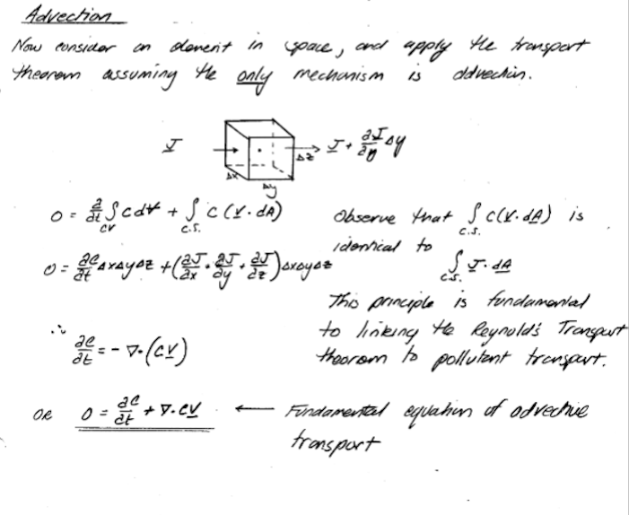
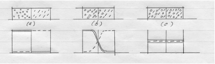
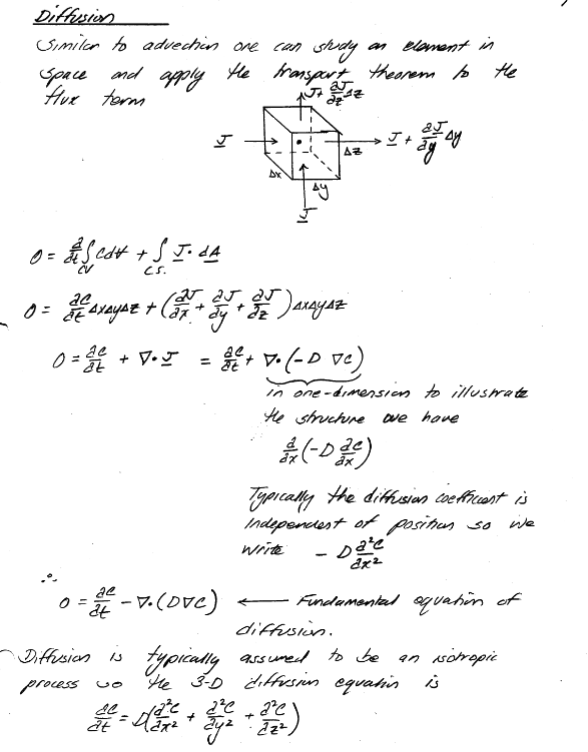

7. Physical Transport#
Course Website
%%html
<style> table {margin-left: 0 !important;} </style>
Readings#
Videos#
Physical Transport Mechanisms#
Groundwater contaminants, once introduced into the subsurface, are redistributed by fundamental physical transport mechanisms. These processes operate at different scales — from the molecular to the aquifer — and together determine how a contaminant plume moves, spreads, and mixes over time. A clear understanding of these mechanisms is essential for building the mathematical framework that describes solute transport and, ultimately, for developing reliable predictive models.
In this chapter, we will examine three key mechanisms:
Advection, the movement of solutes with the bulk groundwater flow;
Diffusion, the molecular spreading of solute due to concentration gradients; and
Dispersion, the additional spreading that arises from velocity variations at pore and field scales.
We begin, however, with two preliminary ideas that prepare the ground for these mechanisms: the Tracer Hypothesis (assuming we can follow a non-reactive constituent) and the concept of flux as a measure of transport across a control surface. These concepts give us the language to formulate transport balances in terms of mass fluxes.
Building these foundations, we will define:
Tracer Hypothesis — introduce the simplifying assumption of non-reactive solutes and why this is crucial for isolating physical processes.
Flux — define flux as a mass transport rate per unit area, establishing the link between concentration, velocity, and transport.
Advection — develop a cell-balance derivation that shows how solute is transported with the average linear velocity of groundwater.
Diffusion — present Fick’s Law and outline a pseudo-derivation connecting concentration gradients to molecular mixing.
Dispersion — extend the cell-balance concept to describe mechanical mixing and heterogeneity-driven spreading.
The chapter culminates in the Advection–Dispersion Equation (ADE), a governing partial differential equation that integrates all three mechanisms into a single framework. At this stage we will simply present the PDE itself, but not yet pursue solutions.
The following chapter will build on this foundation by exploring modeling approaches: particle tracking of advective transport, finite difference schemes for the ADE (with upwinding to handle flow directionality), and practical applications such as travel-time estimation and capture-zone delineation.
The Tracer Hypothesis#
The tracer hypothesis is an assumption that is often used in groundwater contaminant transport models. The hypothesis states that the movement of a conservative tracer (a substance that is not affected by chemical reactions or other processes that alter its concentration) through a porous medium can be used to determine the movement of other, non-conservative substances (such as contaminants) through that same medium.
In other words, if we introduce a known quantity of a conservative tracer into a groundwater system, we can track its movement over time and use that information to estimate how other substances, such as pollutants or contaminants, might be moving through the same system. This can be a useful tool for understanding and predicting the behavior of contaminants in groundwater, and for designing effective remediation strategies.
It is a widely used and well-established concept in groundwater contaminant transport modeling.
It is especially helpful in providing a way to approximate transport of constituients that react with the solid matrix using a concept called retardation (apparent species velocities are retarded relative to non-reactive species).
Flux#
Transport of materials is quantified in terms of flux density or flux. Flux density is the amount of material that passes a point in space per unit area per unit time. Flux is a vector quantity with magnitude and direction. Flux vectors point in the direction of net material motion and their magnitude indicates the rate of motion in that direction.
The figure depicts how a flux vector is defined. Imagine a frame centered at (x,y,z), oriented perpendicular to the plume time average flow line. The mass of pollutant that passes through this frame per unit time divided by the area of the frame is called the pollutant mass flux. The amount of fluid momentum passing through the frame would be called the momentum flux. Any quantity can be defined in terms of its flux although mass, energy, and momentum are the most common quantities studied in engineering.
Advection#
Advection (convection) is the transport of dissolved or suspended material by motion of the host fluid. The prediction of the direction and amount of material transported requires knowledge of the fluid velocity field (the velocity of a fluid particle).
The figure depicts the flow of a labeled fluid in a tube. One can use the sketch to define various useful properties of the labeled fluid portion as listed.
Property |
Expression |
|---|---|
Mass of labeled fluid |
\(m=\rho A\Delta L\) |
Mass of tracer |
\(m=C A\Delta L\) |
Distance traveled by leading (trailing edge) |
\(x=\Delta L\) |
Time required to travel distance |
\(time = \Delta t\) |
Velocity of leading edge |
\(u = \frac{x}{time} = \frac{\Delta L}{\Delta t}\) |
Mass through circular frame/unit time |
\(m=\frac{\rho A\Delta L}{\Delta t}\) |
Tracer through circular frame/unit time |
\(m=\frac{C A\Delta L}{\Delta t}\) |
Fluid mass flux |
\(J=\rho\frac{UA}{A}=\rho\frac{Q}{A}=\rho U\) |
Tracer mass flux |
\(J=C\frac{UA}{A}=C\frac{Q}{A}=C U\) |
The advective flux is the product of the quantity of interest (in this case mass of either host fluid or tracer) and the velocity term. Typically the mean section velocity is used (pipe flow, open channel flow) because fine scale resolution of the velocity field is impossible. In porous media, the pore velocity or average linear velocity is used. Advection calculations usually use mean section velocity based on discharge measurements.
Modeling Advection#
To build models, we simply apply the Reynolds Transport Theorem to the advective flux component something like:

Diffusion#
The sketch below represents three snapshots of a closed system with two ideal gasses.

Initially the closed system consists of two different ideal gasses at the same pressure separated by a partition (a). When the partition is removed, spontaneous mixing occurs (b). The sharp concentration profiles are rounded. After enough time has elapsed, equilibrium is reached and the concentration of gasses in the system is uniform (c).
This mixing process is called molecular diffusion.
When the diffusing materials are dilute relative to the host fluid (mole fraction << 1), then the host fluid acts as a conduit and does not need to move for the materials to move. When the materials are not dilute (as in the example above), significant bulk flow occurs of both the diffusing materials and the host fluid. In most civil and environmental engineering problems, the infinite (dilute) dilution condition is appropriate and one ignores the motion effect that the diffusing materials cause on the host fluid.
The sketch below depicts a physical system with a volatile liquid in contact with the atmosphere through a narrow bore tube. The liquid molecules evaporate to maintain a constant partial pressure equal to the vapor pressure of the liquid. Random motion of these gas molecules takes some of them out of the tube where they are mixed in with the atmosphere.

As these molecules leave the tube, more liquid must evaporate to maintain the constant vapor pressure – after a short time the rate of vaporization will become constant. The rate of escape of the molecules is inversely proportional the length of the tube, proportional to the area of the tube, and proportional to the partial pressure of the liquid.
One can incorporate these observations as:
The constant of proportionality is called the diffusion coefficient and the diffusive flux is expressed as:
This expression is called Fick’s first law of diffusion. It can be generalized into three-dimensions as
The diffusion coefficient is a property of the diffusing species, the host fluid, the temperature, and the pressure.
Kinetic-Molecular Model of Diffusion#
Consider 3 small adjacent cells as depicted in the figure above. Each particle (molecule) has energy proportional to the square of its molecular velocity – while these velocities might be huge, the particles don’t move far before they hit a wall, another particle and their direction changes.
On average the velocities will have the same magnitude for any species (all tigers run the same speed, all bears run the same speed, but tigers and bears have different speeds). If we consider the energy in each cell we have an energy gradient from cell A to cell C. (We are using the particle number in each cell as a measure of the energy – 10 particles in cell A, 3 in cell C)
From mechanics principles one can argue that on average more particles will cross from A to B than from B to A in a short time period. Thus cell B will accumulate particles while cell A will tend to lose particles. When the number of particles in each cell is equal, then these will be no further net accumulation in either cell. If we divide each cell by its volume we see that the energy term has dimensions of a concentration multiplied by velocity squared (nearly the same dimension as the diffusion coefficient).
Now if we express the difference in energy in adjacent cells as a gradient
Thus one can conclude that the gradient of energy is proportional to the gradient of concentration. Flux is the flow of energy per unit time from high concentration to low concentration – using this mechanical model it can be expressed as
Observe that the flux incorporates the molecular velocity of the molecule relative to the host fluid (a function of molecule size, temperature, and shape). To obtain correct dimensionality we need to express the gradient as energy per unit weight of material (not unit volume) and relate velocity to host fluid properties – ultimately one can arrive at an explanation that matches Fick’s law.
Importance of Diffusion#
In air the diffusion coefficients for a wide range of molecules of various molecular weights and functionalities range from \(0.05 ~\frac{ cm^2}{s}\) (large volatile organics) to \(0.6 ~\frac{ cm^2}{s}\) (hydrogen) – a variation of about one order of magnitude. In water the diffusion coefficients range from \(0.8 \times 10^{–5}~\frac{ cm^2}{s}\) to \(4.5 \times 10^{–5}~\frac{ cm^2}{s}\) for similar compounds – a variation of about ½ an order of magnitude.
The distance a molecule will travel is proportional to the square root of the product of time and diffusion coefficient – in air 1 meter/per day is reasonable; in water 1 cm/day is reasonable – thus as a process for bulk transport, diffusion is meaningless except at interfaces where it may be the only process. It can achieve huge transport rates at interfaces because of large gradients that occur in these regions.
However at low host fluid velocities, diffusion can matter and more importantly the structure of the mathematical model is similar to the dispersion process.
Diffusion Modeling#
As with advection one can examine a small volume in space in terms of flux and construct the equations of mass transport - as bafore its really the Reynolds Transport Theorem applied to the diffusive flux.

Dispersion#
In actual releases of pollutants into the environment advection based on mean section velocity computations/measurements and diffusion alone cannot explain observed behavior.
In actual flows, speeds (velocities) are neither uniform nor steady – the mixing caused by non-uniform flows is called dispersion. Dispersion is a consequence, in modeling, of not being able to accurately describe the velocity field at a small enough scale spatially and temporally to account for the continuous changes in directions and speeds that occurs in real flows. (Read any fluid mechanics textbook – especially the section on turbulent correlation coefficients). There are several processes that arise in fluid flow modeling and measurements that can be called dispersion: shear-induced dispersion; turbulent diffusion; hydrodynamic dispersion.
Shear-Induced Dispersion (Pipe and Open Flows)#
Shear-induced dispersion occurs in a flow field where the fluid velocity varies with position in a direction perpendicular to the mean section velocity. If contaminant concentrations in a shearing flow field vary in the direction of mean flow, then a dispersive mixing phenomenon will be observed, producing a net transport of pollutants from regions of high concentration to low concentration.
Typically a Fickian-type model using the section average concentration is used to explain shear-induced dispersion. The diffusion coefficient is called the shear-flow dispersivity.
The dispersivity is often estimated from a ratio of velocity variation and a characteristic mixing length based on the dimensions of the flow field.
Turbulent Diffusion (Pipe and Open Flows)#
Most flows are turbulent – often we model the flows using ideal (laminar) flow theories and use turbulent flow equations of motion to determine mean velocity values, and turbulent flow variation models to explain the random nature of fluctuations about the mean flow values. In many cases the fluctuations themselves are uninteresting, but their effect on mixing is critical. The mixing caused by the turbulent variations in speed and direction is called turbulent diffusion.
Again a Fickian type model is used, but the point concentration replaces the section average concentration
In three dimensions the flux is represented as (isotropic representation – off diagional terms are not necessarily zero)
The diffusion coefficients are known as turbulent diffusion coefficients, or eddy diffusivities. The values of eddy diffusivity vary in space, time, and direction. They are strongly dependent on the nature of the flow field (related to velocity at any location). Closure models (correlations between geometry, flow speed, and eddy diffusivities) are still incomplete, although for many flow systems good predictions are possible.
Hydrodynamic Dispersion (Porous Flows)#
Conceptually hydrodynamic dispersion is similar to shear-induced dispersion in pipe and open flows. It occurs because of sectional velocity variation at the pore scale and because of macroscopic flow variation because of medium non-homogeneity. It is not a consequence of turbulence because it occurs even in laminar flows in porous media. Again the working model is a Fickian type model:
In hydrodynamic dispersion the diffusion coefficients are called hydrodynamic dispersion coefficients and are directly proportional to the local average linear velocity.
Summary#
Dispersion is a mixing process that is modeled using a model that is structurally identical to diffusion. The dispersion coefficients are dependent on the flow field for both magnitude and direction. The dispersion coefficients in most flows are orders of magnitude larger than diffusion coefficients making their accurate representation critical for good predictive modeling of pollutant transport. To model pollutant transport one must first determine the nature of the flow (velocity) field – thus in this course we will devote a great deal of effort in determing flow and discharge characteristics before trying to move pollutants in the flow field.